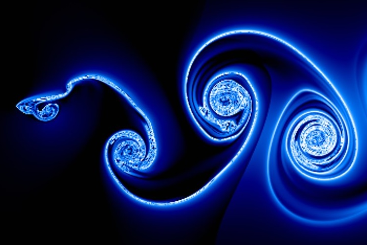
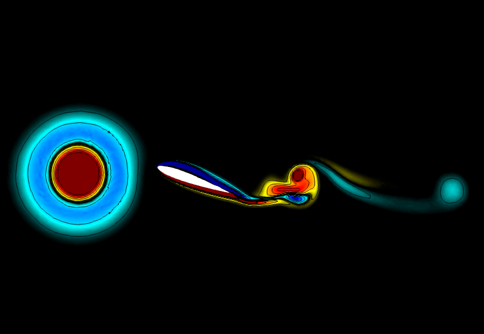
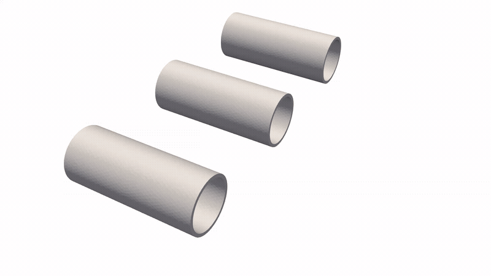
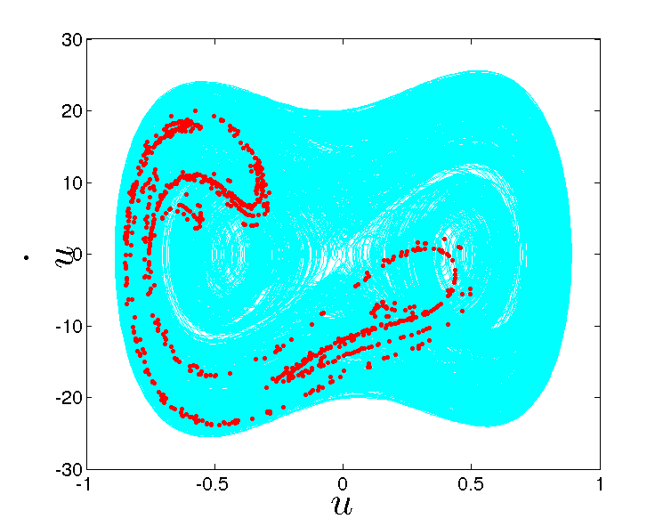
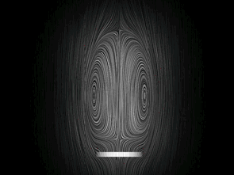
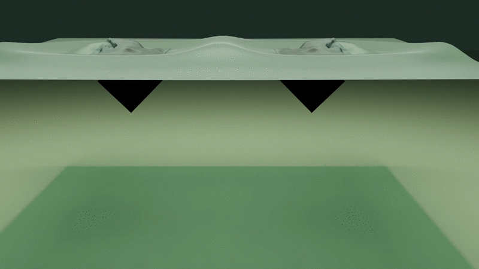
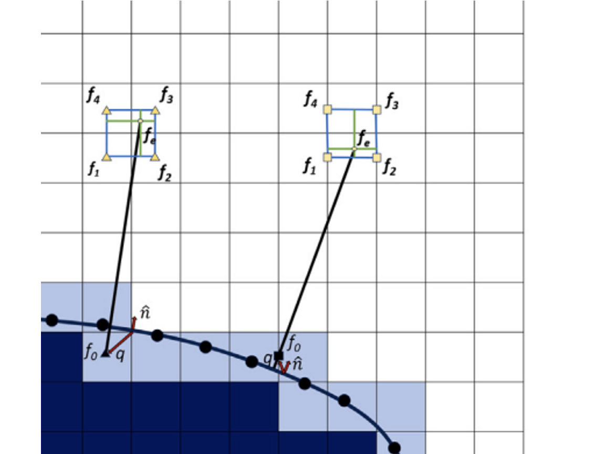

Bio-Inspired Fluid-Structure Interaction Laboratory
Aerospace Engineering, University of Birmingham
Welcome to the Bio-inspired Fluid-Structure Interaction Laboratory (BioFSILab), led by Dr. Chandan Bose, Assistant Professor of Aerospace Engineering at the University of Birmingham. We study how flexible structures and moving bodies interact with the flows around them, taking inspiration from flapping insects and birds, swimming squid and other natural flyers and swimmers. Our work combines high-fidelity fluid-structure interaction simulations, in-house GPU-accelerated solvers and data-driven reduced-order models with experiments carried out alongside our collaborators in the UK and abroad. We use these insights to design better micro air vehicles, soft underwater robots and marine renewable energy devices.
1 postdoctoral researcher 7 PhD students collaborators in 8 countries Meet the team →
Contact: c.bose@bham.ac.uk / cb.ju.1991@gmail.com
Research Themes
-

Flapping Wing Aerodynamics Vortex formation, wake transitions and the route to chaos behind flapping wings. -
 Active & Passive Morphing Wings
Flexible and shape-changing wings that tame wakes and adapt to flight conditions.
Active & Passive Morphing Wings
Flexible and shape-changing wings that tame wakes and adapt to flight conditions.
-

Gust Response of Passive Flyers How free-falling and gliding bodies ride gusts to stay aloft for longer. -

Squid-Inspired Jet Propulsion Flexible nozzles that store and release elastic energy to amplify pulsed jets. -

Aeroelasticity & Flow-Induced Vibrations Flutter, stall-induced oscillations, vortex-induced vibrations and their control. -

Permeable-Body Aerodynamics How flow through porous plates and permeable disks reshapes wakes and drag. -

Wave-Structure Interaction & Energy Harvesting Flexible structures that interact with waves and flows to harvest energy. -

GPU Solvers & Data-Driven Modelling GPU-accelerated immersed-boundary solvers, reduced-order models and optimisation.
Recent News
- Nov 2026BioFSILab will present its latest research at the 79th APS Division of Fluid Dynamics Annual Meeting in Orlando, USA (22–24 November), including butterfly flight aerodynamics, passively morphing foils in gusty flows and data-driven modelling of vortex-induced vibrations.
- Aug 2026Our paper “Effect of transverse gust on free-falling plates” has been published in the Journal of Fluid Mechanics, in collaboration with the University of Edinburgh.
- Jul 2026Our work on GPU-optimised integration of immersed-boundary and overset-mesh methods for moving-boundary problems has been published in Computer Methods in Applied Mechanics and Engineering, with collaborators at IIT Kharagpur.
- Jun 2026New preprint with Georgia Tech: multi-objective Bayesian optimisation of rigid and flexible nozzles for energy-efficient pulsed-jet propulsion.
- May 2026Doudou Huang’s paper on the wake dynamics of permeable disks across the transition from steady to chaotic flow has been published in the Journal of Fluid Mechanics, and our collaborative preprint “Squid funnels time their elastic recoil to amplify pulsed jets” is now on arXiv.
Join Us
Postdoctoral Fellowships
Royal Society Newton International Fellowship 2027: outstanding early-career researchers based outside the UK are invited to get in touch about applying to work with BioFSILab on computational fluid dynamics, fluid-structure interaction and multiphysics modelling.
Deadline: the Royal Society call is expected to close in March 2027 (exact dates to be confirmed). Please get in touch as early as possible so there is time to develop a strong application.
I am also happy to support applications to MSCA Postdoctoral Fellowships, Royal Academy of Engineering Research Fellowships and other schemes.
PhD Opportunities
UK/EU (settled) candidates: Propeller-Wing Wake Interactions for Urban Air Mobility Systems.
International candidates: enquiries about scholarship pathways and self-funded doctoral study are warmly welcome.
How to apply: email c.bose@bham.ac.uk with your CV and a short statement of your research interests.
Office Address: Room No. 1B27, Met & Mat Building (G6), School of Metallurgy and Materials, University of Birmingham, Edgbaston, Birmingham, B15 2TT, United Kingdom.